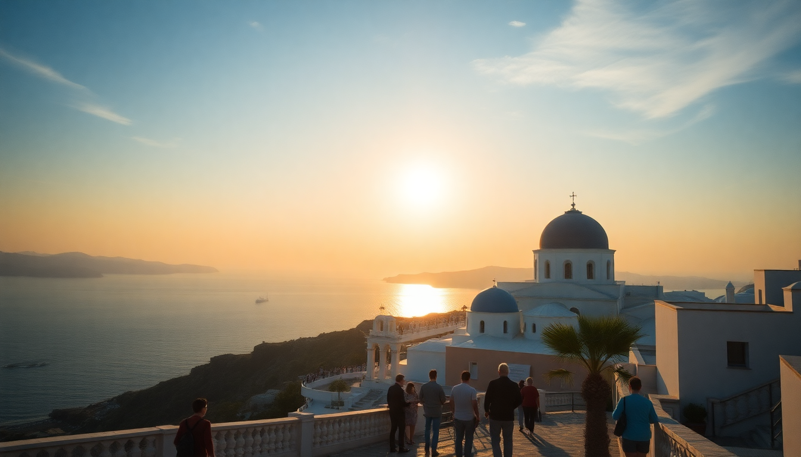

10 Day Greece Itinerary: Athens, Santorini & Crete

I spent ten days hopping between Athens, Santorini, and Crete last June, and I’ll be straight with you: it’s doable, but it’s a sprint. You’ll need to move fast, pack light, and accept that you’re trading depth for breadth. If you’ve got the stamina, here’s exactly how I’d do it again—no fluff.
How should I split my 10 days between Athens, Santorini, and Crete?
I landed in Athens, spent two full days there, then took a ferry to Santorini for three nights, and finished with four nights in Crete. That split gave me just enough time to see the highlights without feeling like I was checking boxes on a conveyor belt.
If I had to adjust, I’d steal a day from Santorini and give it to Crete. Santorini is stunning, but after two full days I was ready to leave. Crete has more variety—beaches, mountains, ruins—and deserves the extra day.
What’s the best way to get between these islands?
Ferry is the only practical option unless you’re rich and short on time. I booked with Blue Star Ferries and Seajets. Blue Star is the workhorse—big, stable, and cheap. Seajets is faster but smaller, and if the sea is rough, you’ll feel it.
Athens to Santorini: Take the 7:00 AM Blue Star from Piraeus Port. It’s about 8 hours, but the boat has a cafeteria, deck seating, and decent Wi-Fi. Bring a book.
Santorini to Crete: I took the Seajets high-speed ferry from Athinios Port to Heraklion Port. It took about 2.5 hours. Book a seat on the upper deck if you get seasick.
Crete back to Athens: Flew from Heraklion Airport to Athens on Aegean Airlines. It’s a 45-minute flight and costs around €60. Worth skipping the 9-hour ferry.
What should I do in Athens in 2 days?
Day one: Hit the Acropolis at 8:00 AM to beat the crowds and the heat. After that, walk down to Plaka for lunch at Taverna tou Psirri—get the grilled octopus. Spend the afternoon at the Acropolis Museum (air-conditioned, excellent exhibits). Evening: walk through Monastiraki Flea Market and grab dinner at Ama Lachei in the Psiri neighborhood. It’s a small, family-run spot with killer lamb chops.
Day two: Explore the National Archaeological Museum in the morning. It’s huge, so pick your favorites (the Antikythera mechanism and the gold masks of Mycenae). For lunch, hit Mani Mani near the Acropolis for modern Greek food. Afternoon: walk the Anafiotika neighborhood—it feels like a Cycladic island dropped into the city. End with sunset drinks at Couleur Locale rooftop bar.
Places I actually recommend:
- Acropolis Museum – better than the site itself for understanding what you saw
- Anafiotika – quiet, whitewashed lanes, zero tourists after 6 PM
- Mani Mani – one of the best meals I had in Greece
- Couleur Locale – cheap drinks, great view of the Acropolis
Is Santorini worth the hype? What should I actually do there?
Short answer: yes, but only for the view. The island is a tourist machine. Oia is a zoo during the day—crowds three deep at sunset. I stayed in Fira instead, which is less photogenic but has better restaurants and a functioning bus system.
Day 1: Arrive from Athens, check into Hotel Thireas in Fira (quiet, great pool, reasonable price). Walk the cliffside path from Fira to Firostefani for sunset—it’s less crowded than Oia and the view is the same.
Day 2: Take the local bus to Red Beach in the morning. It’s a volcanic beach with red cliffs—worth a swim, but bring water shoes. In the afternoon, book a wine tour of the island. The volcanic soil produces a crisp Assyrtiko wine that you can’t get elsewhere. I used Santorini Wine Tours—small group, three wineries, no nonsense.
Day 3: Morning hike from Fira to Oia (about 3 hours). It’s hot, so start at 6:00 AM. The trail passes through Imerovigli, which has the best views on the island. End in Oia for a late breakfast at Melenio (pitas, not the overpriced seafood). Ferry to Crete in the evening.
What to skip: The cable car line in Fira (walk down the donkey path instead), the sunset crowds in Oia, and the overpriced “caldera view” restaurants in Oia that charge €40 for a mediocre pasta.
How do I tackle Crete in 4 days?
Crete is big—about the size of Cyprus. You can’t see it all. I focused on two bases: Chania (west) and Heraklion (central/east).
Days 1-2: Chania. Stay at Casa Delfino in the Old Town. Walk the Venetian harbor, eat at Tamam (get the lamb with yogurt and the Cretan salad). Day two: drive to Balos Lagoon (rent a car—it’s an hour, the road is rough, but the water is unreal). Alternatively, hike the Samaria Gorge if you’re fit—it’s a 16 km descent through a canyon. I did Balos because I wanted to swim, not sweat.
Days 3-4: Heraklion. Stay at Lato Boutique Hotel—it’s right on the harbor and close to the bus station. Day three: visit the Palace of Knossos (Minoan ruins, less crowded if you go at 8 AM). The site is underwhelming compared to the Acropolis, but the history is fascinating. For lunch, Peskesi in Heraklion—traditional Cretan food, slow-cooked goat, and a courtyard garden. Day four: drive east to Elafonisi Beach (pink sand, shallow water, worth the 2-hour drive) or explore Matala (hippie caves from the 1960s, great for a swim).
Places I actually recommend:
- Casa Delfino – boutique hotel in Chania, worth the splurge
- Tamam – best meal in Chania, no contest
- Balos Lagoon – arrive by 9 AM to avoid crowds
- Peskesi – farm-to-table Cretan food in Heraklion
- Elafonisi Beach – pink sand, clear water, long drive but worth it
FAQ
How much does this 10-day trip cost? Budget around €1,500–€2,000 per person for mid-range hotels, ferries, flights, meals, and entry fees. Ferries are the biggest variable—Seajets to Santorini cost me €65 per person, Blue Star to Crete was €45. Add €200–€300 for a rental car in Crete.
Should I book ferries in advance? Yes, especially in peak season (June–September). Book at least two weeks ahead on Ferryhopper or directly with Blue Star Ferries. Walk-up tickets often sell out, and you’ll be stuck on a deck waiting list.
What about luggage on ferries? Pack light—a carry-on plus a daypack. Ferries have luggage holds, but you carry your bags up and down stairs. In Santorini, you’ll haul your suitcase up steep caldera steps. I saw people crying over rolling suitcases on cobblestones. Use a backpack.
Conclusion
- Athens: Two full days is enough for the Acropolis, the museum, and good food. Don’t skip the neighborhoods—Plaka is touristy but fun, Psiri is where locals eat.
- Santorini: Three nights is the sweet spot. Stay in Fira, not Oia. Do the hike, skip the sunset crowds.
- Crete: Four nights minimum. Split between Chania and Heraklion. Rent a car for Balos or Elafonisi.
- Ferries: Book ahead. Blue Star for comfort, Seajets for speed. Fly from Crete to Athens to save time.
- Packing: Backpack only. You’ll thank me when you’re walking up the Fira steps.